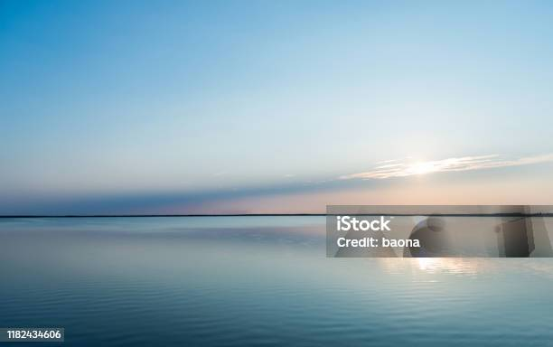

Gudang & Logistik
Manajemen Stok Modern
Sistem pergudangan kami dirancang untuk efisiensi maksimal. Dengan manajemen stok yang terkomputerisasi, kami memastikan ketersediaan produk dan meminimalkan waktu tunggu untuk pengiriman ke seluruh area distribusi kami.
- Kapasitas Penyimpanan Besar & Aman
- Sistem FIFO (First-In, First-out)
- Area Pemuatan yang Efisien
- Kontrol Kualitas & Suhu Terjaga

iStock · Credit: beona
iStock · Credit: beona
Jaringan Distribusi Luas
Didukung oleh armada yang andal dan rute yang terencana, kami menjamin pengiriman produk pupuk yang tepat waktu ke tangan para petani dan mitra kami di berbagai daerah.
- Jangkauan Pengiriman Nasional
- Pelacakan Pengiriman Real-time
- Tim Logistik Profesional